The WEST Interface¶
Summary: An orientation to the WEST graphical environment — sheets, blocks, terminals, the Block Library, and the included example projects.
Source: WEST User Guide, Chapter 2.
Overview of the workspace¶
When WEST opens you see a multi-panel environment built around a central sheet area flanked by dockable system windows. The main areas are:
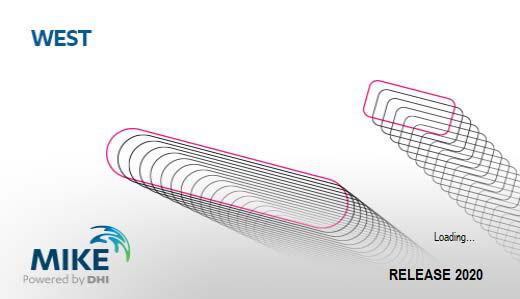
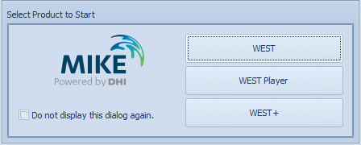
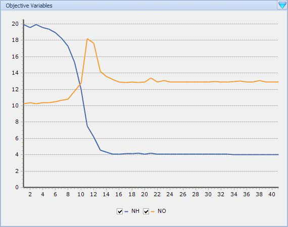
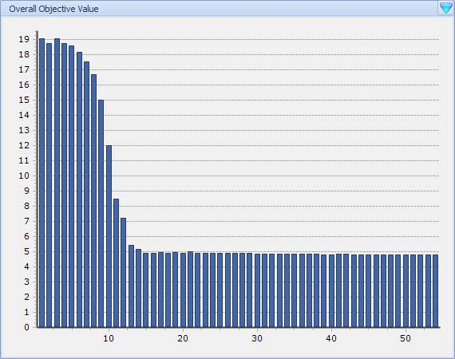
| Area | Description |
|---|---|
| Sheet area | The large central canvas. Shows whichever sheet tab is active (Layout, Dashboard, Interface, or Web Browser). |
| Block Library | Left-hand palette of all available process-block categories. Drag blocks from here onto the Layout Sheet. |
| Properties window | Shows and edits graphical properties (position, size, colour, label) of the selected layout object. |
| Block Details window | Shows the Parameters and Variables of the selected block. |
| Model Explorer | Tree view of the entire project: project → blocks → sub-models → variables. |
| Control Center | Run panel: select experiment type, start/stop simulations, view progress. |
| Layers panel | Manage visibility layers for organising complex layouts. |
| Logging window | Solver messages, warnings, and errors during a simulation run. |
| Menu bar | Tabbed ribbon: Home, Insert, Project, View, Tools, Format. |
| Status bar | Shows current experiment type, edit mode, and zoom level. |
On first launch, the Getting Started pane is shown instead of the Layout Sheet. It provides quick access to recent projects, example projects, templates, and tutorials.
The News Headlines panel displays links pulled automatically from the MIKE Powered by DHI website, so you always see the latest DHI announcements without leaving WEST.
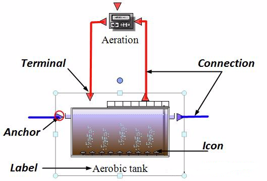
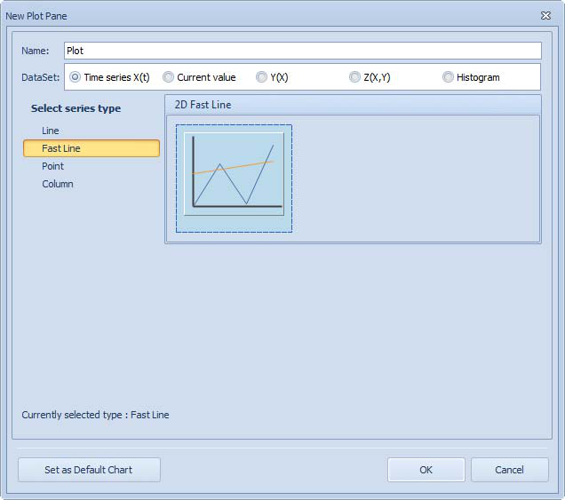
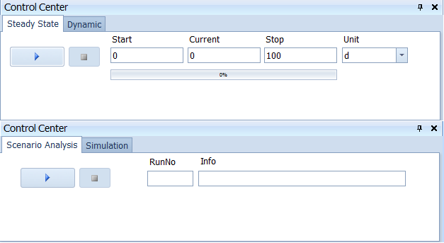
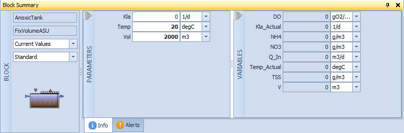
Sheets¶
Four classes of sheet are available in a project:
| Sheet type | Purpose | Quantity |
|---|---|---|
| Layout Sheet | The drawing canvas where blocks are placed and wired together to represent the plant. | One per project |
| Interface Sheets | Tab pages for influent fractionation (Influent Sheet) and effluent de-fractionation (Effluent Sheet). | One per Input/Output block |
| Dashboard Sheets | Contain Input widgets (sliders, numeric fields) and Output widgets (plots, tables, gauges) for interactive use during runs. | Multiple allowed |
| Web Browser Sheets | Display the DHI website, WEST forum, or local documentation inside the WEST window. | Multiple allowed |
To add a sheet: Insert → Sheets group → Add Sheet.
The Layout Sheet — blocks, terminals, and connections¶
The Layout Sheet is the main canvas where you build your plant model. Drag blocks from the Block Library panel onto the sheet to place them. Each block has coloured terminals (connection points) on its edges — blue for liquid streams, orange for gas, grey for signals. Hover over a terminal to see its name and type. To connect two blocks, click the source terminal and drag to a compatible destination terminal. Connections snap to terminals automatically; incompatible types are rejected. Right-click any block to access Properties, Rename, or Delete.
Blocks¶
A Block is the graphical representation of a unit-process model (e.g. a CSTR bioreactor, a settler, an influent generator). Each block consists of three parts:
- Icon — the visual symbol on the canvas.
- Terminals — connection anchor points around the icon edge.
- Label — the block's display name, shown beneath or beside the icon.
Blocks are placed by dragging from the Block Library onto the Layout Sheet.
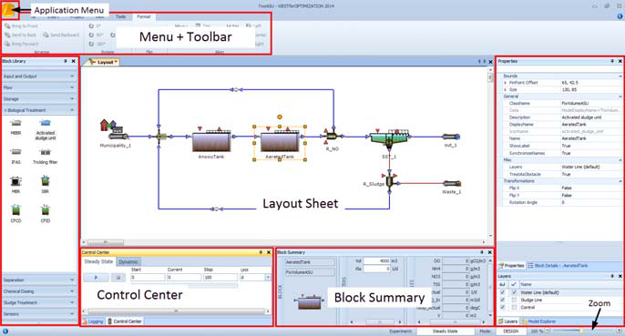
Terminals¶
Hovering the mouse over a terminal shows a tooltip with five properties:
| Property | Meaning |
|---|---|
| Name | Internal identifier of the terminal |
| Type | Data type of the signal carried |
| Description | Human-readable explanation |
| Causality | Input or Output |
| Maximum Number of Connections | How many connections this terminal accepts |
Two visual terminal types exist:
- Blue arrows — mass-flux terminals: carry the wastewater flow vector between process units.
- Red squares — data terminals: carry control signals or sensor outputs (scalar values).
Connections¶
Connections are drawn between compatible terminals. Use Insert | Connections (or the right-click context menu) and choose Polyline or Orthogonal routing before clicking the start terminal. After a connection is made an Interface Link dialog may appear, allowing you to map specific variables from the source terminal to variables on the destination terminal (e.g. a sensor output to a controller manipulated variable). Double-click any connection to review or modify its Interface Links.
Block Library¶
The Block Library panel (left side of the screen) lists all process-block categories installed with WEST. Categories include biological reactors, settlers, influent/effluent generators, sensors, controllers, and more. Expand a category to see individual block icons; drag one onto the Layout Sheet to create an instance.
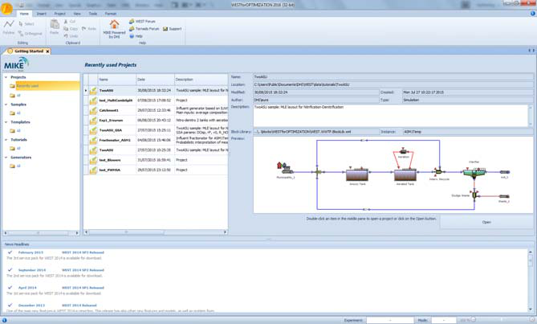
Block Details and Properties windows¶
The Block Details window (bottom panel, default) shows all parameters and state variables for the currently selected block. Parameters are editable; state variables are read-only during a run. The Properties window (right panel) shows block-level metadata: name, model type, and description. Use Block Details to set initial conditions and parameter values before running a simulation.
Block Details¶
Select a block to populate the Block Details window with two tabs:
- Parameters — editable model constants (volumes, kinetic coefficients, etc.). Changes here take effect at the next run.
- Variables — read-only model state variables (concentrations, flows, etc.) populated after a run.
Drag any variable from Block Details onto a Dashboard Sheet to create a live plot or table widget.
Properties window¶
The Properties window shows graphical properties of the selected object (block, connection, or sheet element): position, size, colour, label font, and the ClassName property (the underlying model class, changeable via a dropdown to swap the process model without redrawing the layout).
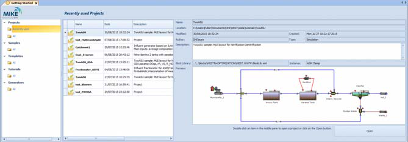
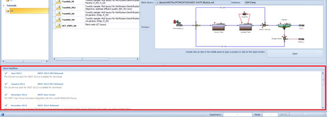
Top-Level Parameters¶
Top-Level Parameters group kinetic or operational parameters that are shared across several blocks (e.g. the same mu_max for multiple CSTR units). Assigning a value to a top-level parameter automatically propagates it to all linked sub-model parameters.
To create them manually: right-click the Layout Sheet (with no block selected) → Top-Level Parameters. To create them quickly from existing blocks: select one or more blocks → in Block Details select the common parameters → click Easy Create Parameters → confirm in the dialog.
Calculator Variables¶
Calculator Variables are user-defined expressions computed from other model variables. They are useful for derived performance indices (e.g. COD removal efficiency combining influent and effluent COD).
To add one: right-click the Layout Sheet → Calculator Variables (or via Project | Miscellaneous → Calculator Variables). Each variable has the properties:
| Property | Description |
|---|---|
| Name | Unique identifier (letters, digits, underscores) |
| Expression | Formula using model variable paths; type . to activate a dropdown of available quantity names |
| Description | Optional free text |
| Unit | Display unit |
| Default Value | Used when the variable cannot yet be evaluated |
| Group | Organises variables in Block Details |
| Bounds | Lower and upper validity limits |
Once created, a calculator variable appears in Block Details at the project level and can be plotted, used as an analysis objective, or referenced in other expressions.
Results viewer¶
After a simulation completes, results can be viewed directly in the results panel.
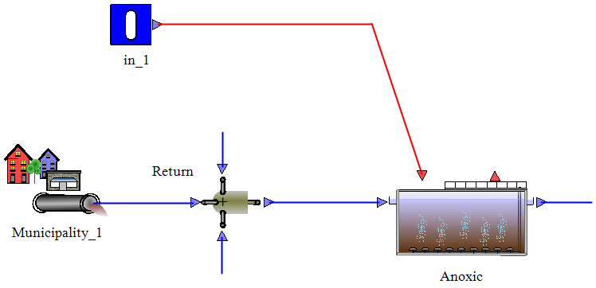
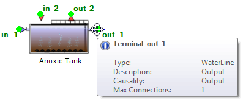
Menus and toolbars¶
The menu bar contains: File (open/save/export project), Project (tools, reports, layout management), Simulation (run, output configuration), View (panel visibility, zoom), Help (documentation, license). The main toolbar provides one-click access to the most common actions: New Project, Open, Save, Run, Stop, Zoom In/Out, and Show Block Library. Hover over any toolbar button to see its tooltip and keyboard shortcut.
Menu bar¶
The WEST ribbon provides access to all commands across several tabs:
- File — New project, Open project, Save, Save As, recent projects, and exit.
- Project — Manage experiments (Virtual Experiments), access tools (sensitivity analysis, parameter estimation), and edit project properties and instance settings.
- Insert — Add blocks to the canvas, draw connections between blocks, insert output and controller blocks, and add new sheets.
- View — Toggle system windows (Block Library, Model Explorer, Control Center, etc.), adjust zoom level, and arrange panels.
- Help — Open the WEST User Guide, check licence status and licence server connection, and view the About dialog (version information).
Tip
Most canvas actions — inserting blocks, drawing connections, accessing block properties, and managing top-level parameters — are also accessible via right-click on the Layout Sheet canvas, without navigating the ribbon.
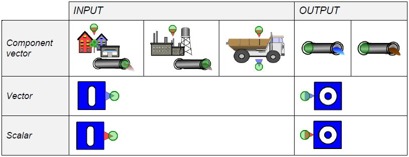
Toolbar¶
The toolbar provides quick access to the most frequently used commands. Common toolbar buttons include:
| Button | Action |
|---|---|
| New Project | Create a blank project using the new-project wizard |
| Open | Open an existing .wst project file |
| Save | Save the current project |
| Run Steady-State | Start a steady-state simulation for the active experiment |
| Run Dynamic | Start a dynamic simulation for the active experiment |
| Stop Simulation | Halt a running simulation |
| Zoom In / Zoom Out | Increase or decrease the canvas zoom level |
| Select | Switch to the selection/pointer mode for clicking and moving objects |
| Pan | Switch to the pan mode for scrolling the canvas by dragging |
The toolbar can be customised: right-click any blank area of the toolbar strip and use the Customise option to add, remove, or reorder buttons.
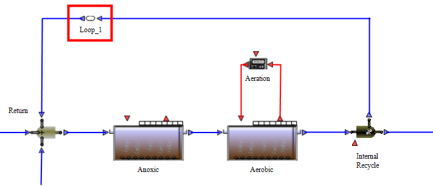
Example projects¶
WEST ships with several ready-to-run example projects accessible from the Getting Started pane:
| Project | Description |
|---|---|
| TwoASU | Basic activated sludge for carbon and nitrogen removal; two compartments (anoxic + aerobic). Good starting point for learning WEST. |
| Galindo_OL | Galindo WWTP open-loop model. Daily average flow 345,600 m³/d; C and N removal; 6 identical treatment lines. Can be operated as RDN or DRDN configuration. |
| Galindo_CL | Galindo WWTP with closed-loop advanced control. Extends Galindo_OL with controllers. |
| Orbal | Nutrient removal plant in Athens, Georgia, USA. Calibrated on NO₃, O₂, NH₄, and PO₄ measurements. |
| OUR_MSL | Demonstrates calibration of K_S and µ_max parameters from OUR (oxygen uptake rate) measurements. |
| TestCase_CEPT | Demonstration of the CEPT (Chemically Enhanced Primary Treatment) model. |
Open an example via the Getting Started pane or File → Open → Samples.